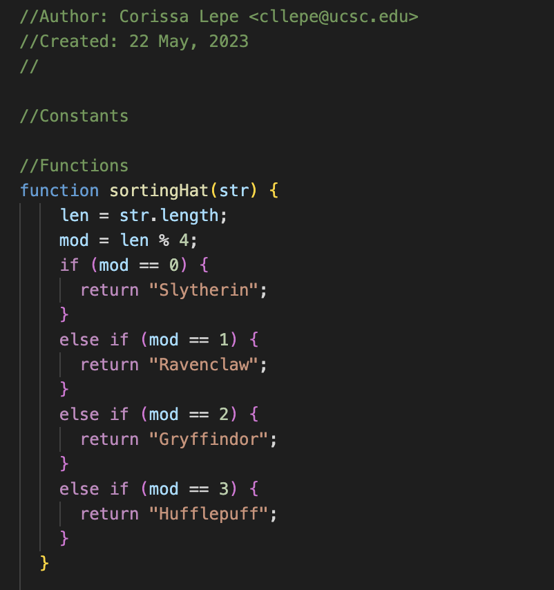
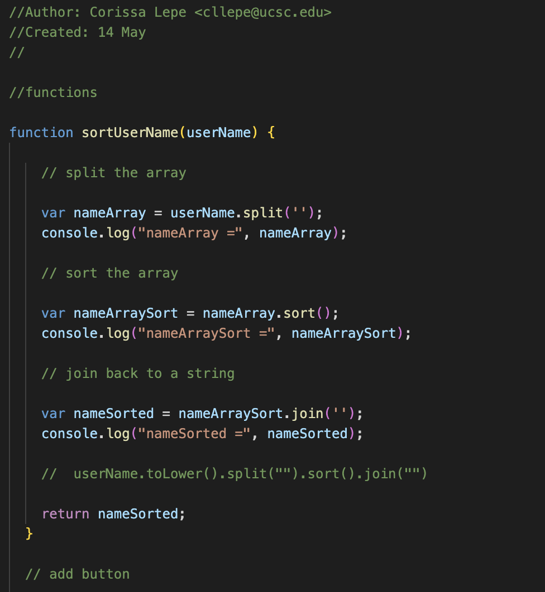
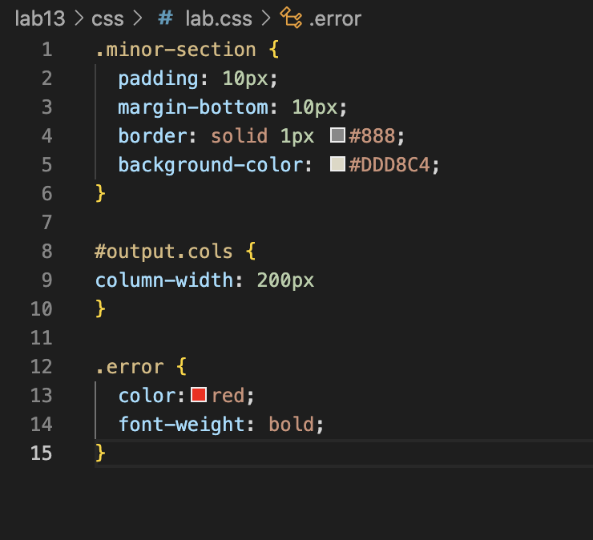
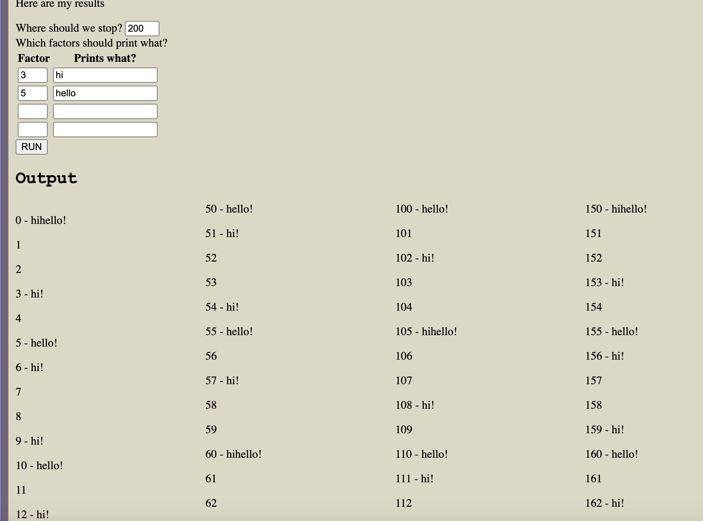

Lab 14 - Debugging
Challenge
For this lab, I ran and debugged the previous labs. I made sure the javascript ran correctly and edited it to make it look neater, and I added to the CSS to make the output look the way I wanted it to.
Problems
The only problem with this lab was that all of my previous labs didn't have javascript that needed to be fixed/debugged.
Results
My results are below
Debugging
None of my javascript needed to be changed, so I just made it neater abd changed some of the css on a couple. For the first screenshot, I just changed the names of some of the Hogwarts houses. For the second screenshot, I made the javascript look a bit more organized by adding more space between the script. For the third and fourth screenshots, I changed the css to make the output look better.
   